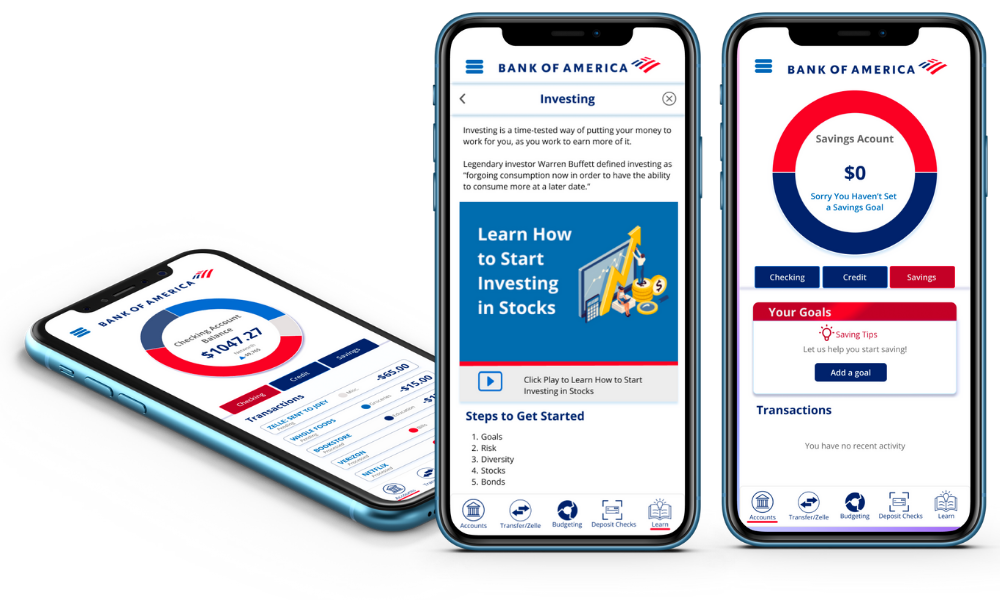
Bank of America
UX Case Study
A product to help College Students to learn financial skills
The project
Bank of America is the second largest bank in the US after JPMorgan Chase. Their headquarters are located in Charlotte, North Carolina. We chose to design a product for Bank of America to target college students as an academic project for GA’s User Experience Design course.
This was a group project developed by three UX students. The objective was to design a product for Bank of America so the company could help its community by teaching how to budget, instill healthy spending habits, saving money, track student loans and plant a seed for a financial future.
My role:
In the project, I was involved in every step of the process and leading the stand ups every day and the Design Studio Sessions. I have shared my process, design decisions, and rationale behind the design approach with my team.
Duration:
2 weeks
Tools
Figma, Excel, Google Forms, Google sheets, Google docs, Canva, Asana
The Process
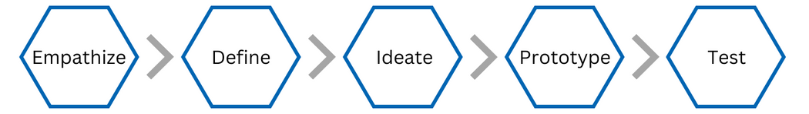
Understanding the Target Audience
We began this project by sending 36 surveys to college students in the states of Texas and North Carolina. We also conducted ten interviews to potential users of the product to evaluate their financial literacy.
Survey insights:
Most college students use their bank’s app.
70% of the students budget their spendings.
Most of the students do not use an app to budget their money or to help them save money.
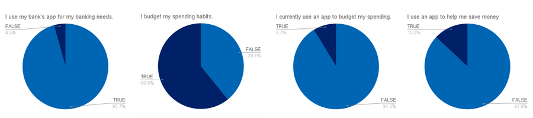
Takeaways from the interviews:
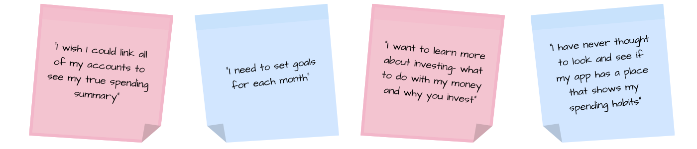
Users like to be able to categorize their spending and see their remaining balance.
Users want a simple way to budget and save money.
Users use the banking app primarily to check their account balance.
Users want a way to link all of their accounts.
Users use the banking app primarily to check their account balance.
Users do not want to have to go out of their way to track finances and learn about financial concepts.
Heuristic Evaluation:
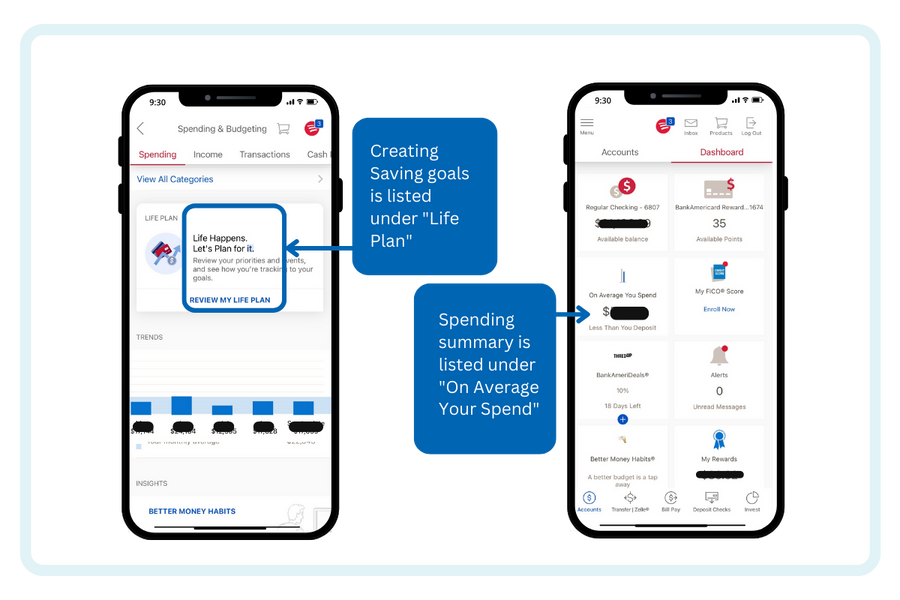
Unclear labeling/organization.
Confusing wording.
Inability to recover from a mistake.
Competitive & Comparative Analysis:
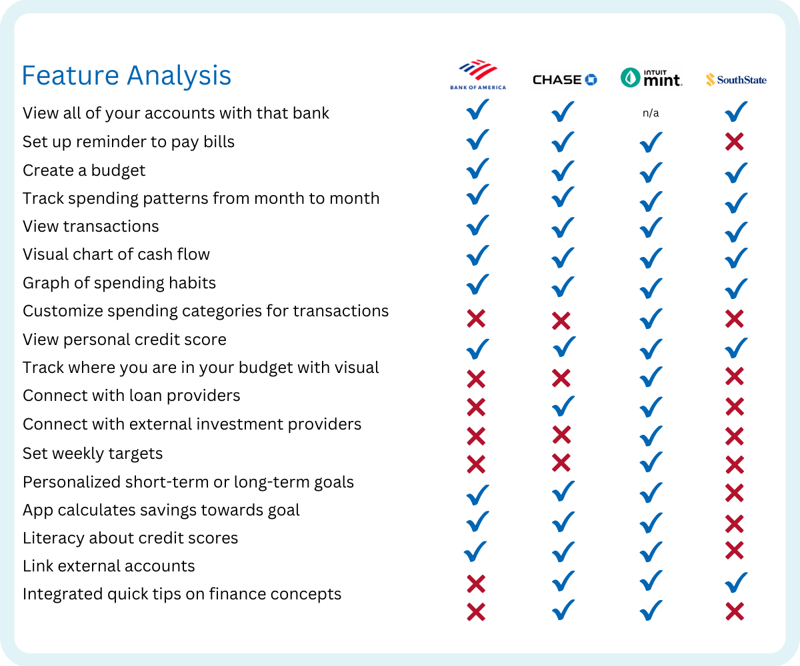
Affinity Map:
We created the Afinity Map using the insights from user research and synthesizing the observations to acquire a deeper understanding of users knowleage about finances, and gain and pain points.
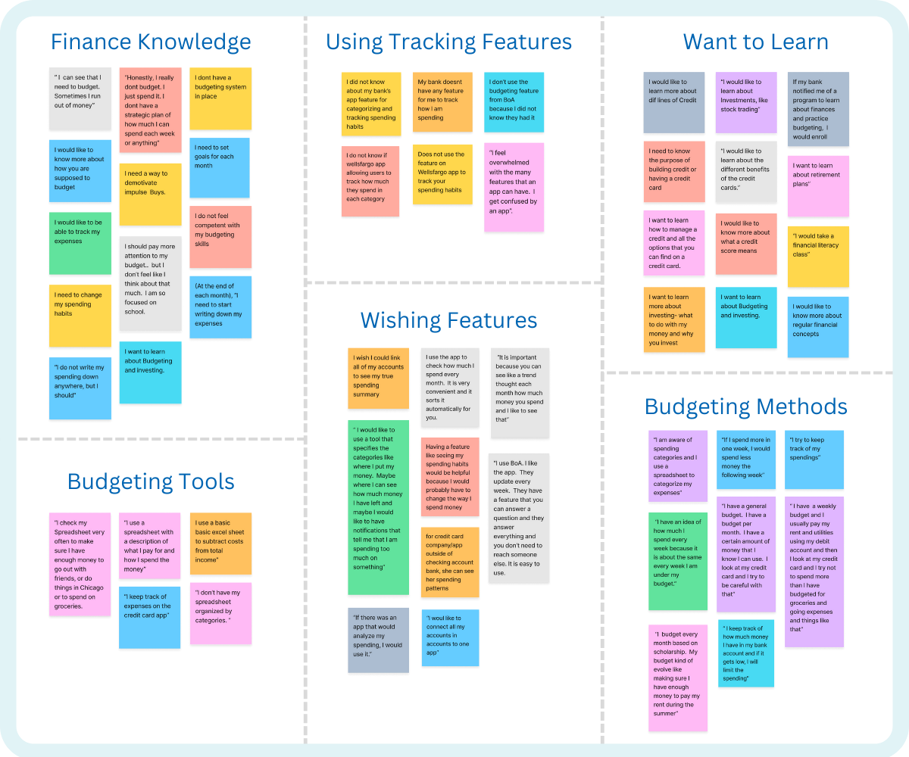
User Persona:
After analyzing the data from our research, we decided to create two personas for our project. One is a college student who is willing to learn how to organize its budget and set savings goals and the other one is a college student who is very organized and keeps track of his expenses and is very mindful about money and wants to use the app not only for investments but also for connecting other accounts and manage everything from only one app.
Problem Statement:
Students need an easy way to learn about and manage their finances so they can understand and meet their financial goals.
How Might We (HMW)
After defining the personas, we did some brainstorming to find ways to help Jack and Jackie with their financial needs.
- HMW help Jackie track her day-to-day spending?
- HMW incentivizes Jake to budget his money?
- HMW teache Jackie and Jake about financial concepts like lines of credit, investing, and creating a budget.
- HMW help Jackie & Jake save money using the app?
- HMW help Jackie & Jake earn money using the app?
- HMW make Jackie and Jake pay more attention to their spending?
- HMW help Jackie and Jake keep track of bills?
- HMW Jackie and Jake learn more about their different loan options?
User Flows
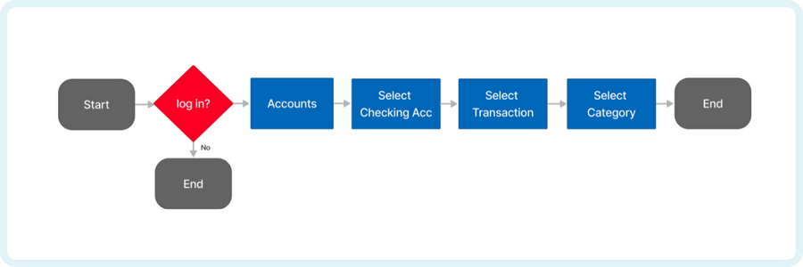
We designed a user flow for Jake to organize his spending transactions in categories.
We designed a user flow for Jackie to set up a goal to save money.
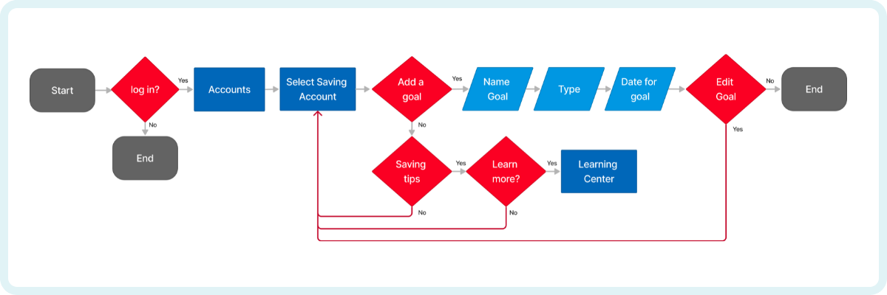
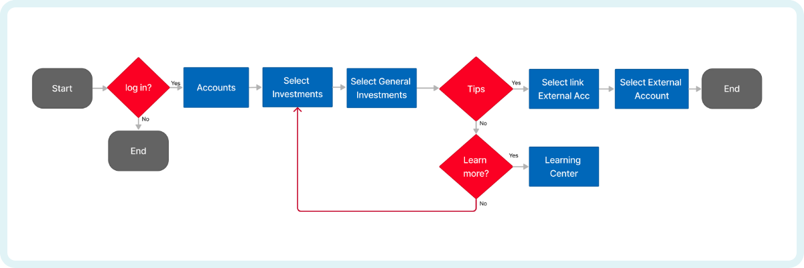
We designed a user flow for Jake to connect external accounts to the app.
Sketches:
We worked on our own ideas creating sketches for the flows and then we presented them to the team during one of the meeting to define how we wanted to build the prototypes.
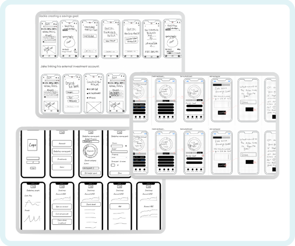
Medium Fidelity Prototype
Wireframes:
Before creating a High Fidelity rototype, we created Wireframes for each flow and built a Mid Fidelity Prototype to do some usability test with some college students. We defined three tasks for the Wireframe User Testing:
1. Create a savings goal
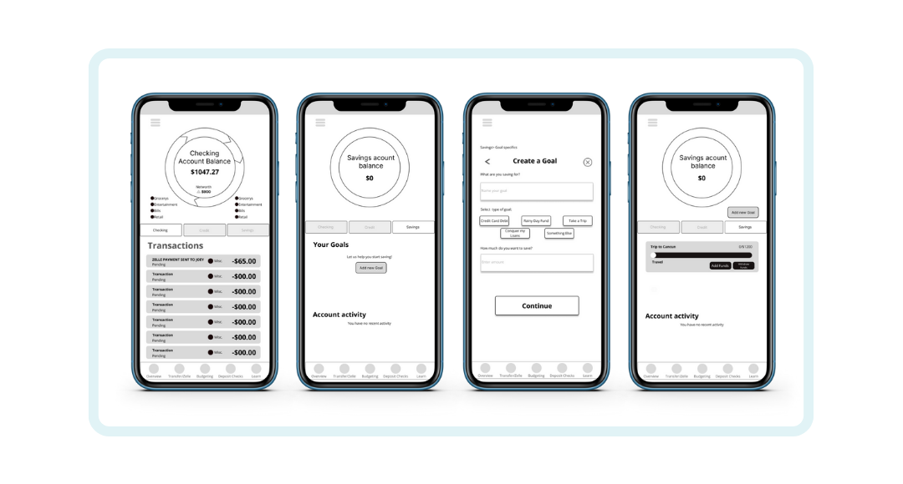
2. Link external investment account to the App.
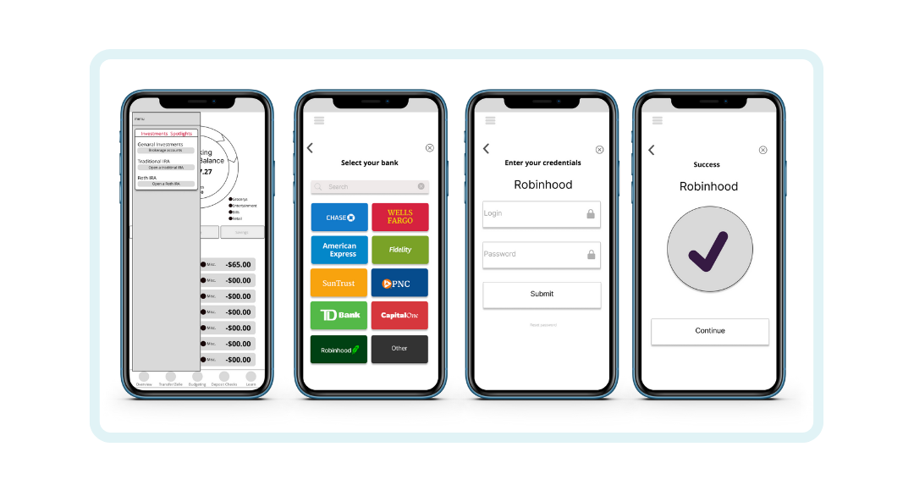
3. Categorize the Zelle payment under Retail.
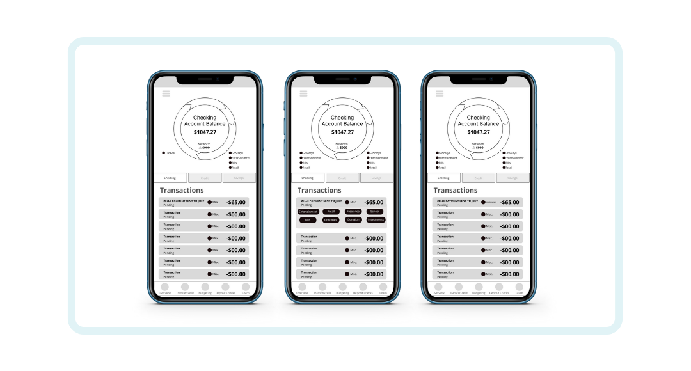
Usability Testing:
Testing the product allowed us to identify problems in an early stage. We started testing the app at the end of the design phase after the mid fidelity prototyping.
We conducted usability testing with 6 participants and asked them to complete the three tasks that we had defined:
1. Show me how Jackie can create a savings goal for her trip to Cancun in March
2. Show me how Jake can link his external investment account with Robinhood.
3. From the home page, please show me how you would categorize the Zelle payment from Joey under Retail.
User Testing Insights:
Overall, the testing showed positive results. However we received some feedback to take into account for the High Fidelity Prototype:
Some users did not recognize that there were buttons for categorizing transactions
Select Date feature for the savings flow wasn't working
Changes when categorizing the Zelle transaction were not noticed
Liked that all accounts were in once place because it lowers the amount of storage they needed on their device
Would not take the initiative to click on “learn” for articles or videos to learn about finances
After testing the Mid Fidelity Prototype we built up a functional High Fidelity Prototype for the three tasks that we had defined.
Key Features:
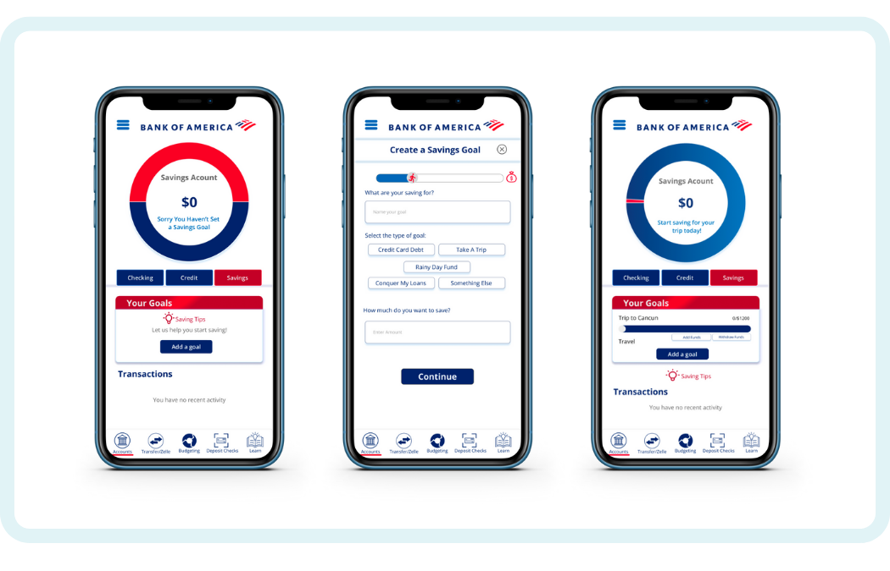
Set a saving goal:
The purpose of this product was to teach college students how to manage their money while using the bank services. With this in mind we designed a feature to help students to set saving goals.
Learning options:
We provided useful financial tips that the students could check from different screens and offered easy access to the Bank of America learning center.
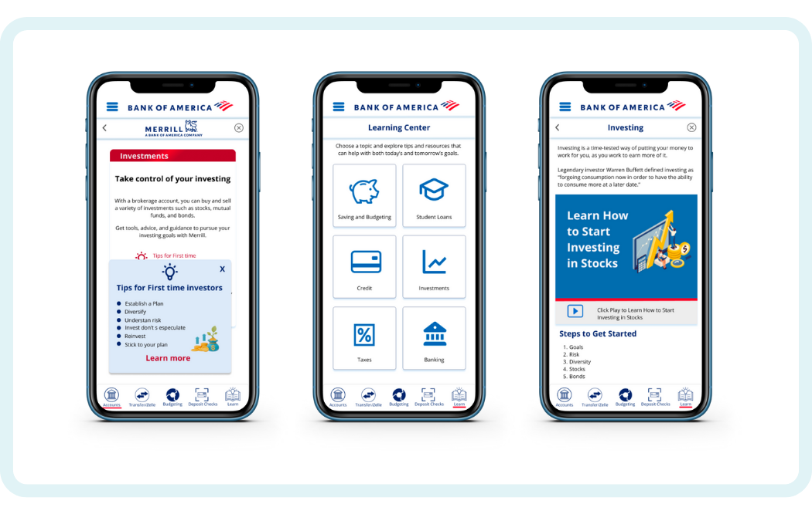
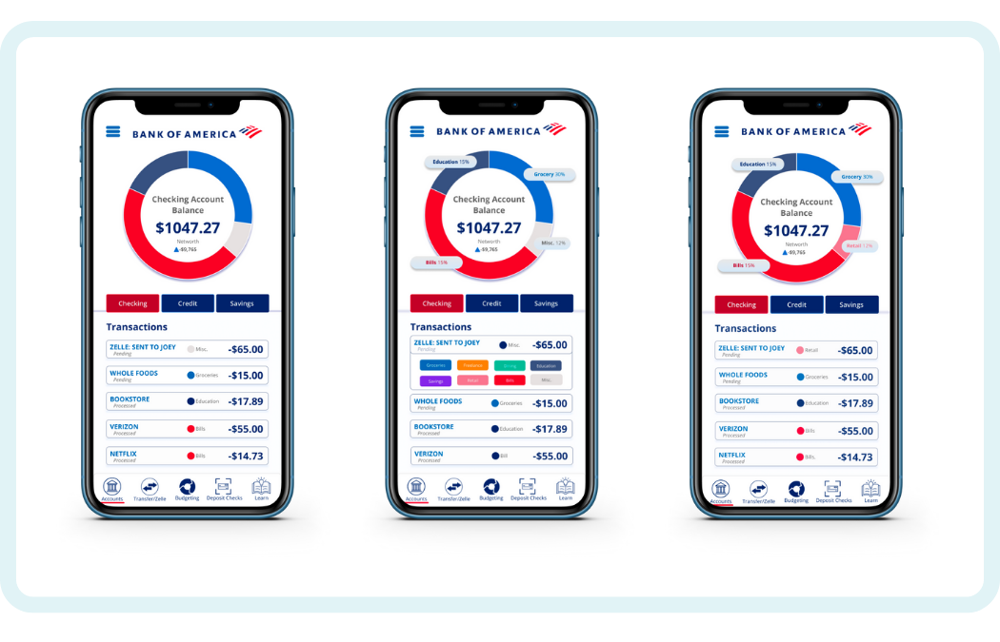
Categorize expenditures:
The user is able to customize their own expenses. For example the user can categorize a Zelle payment under Retail.
Connect external accounts to manage everything on one app.
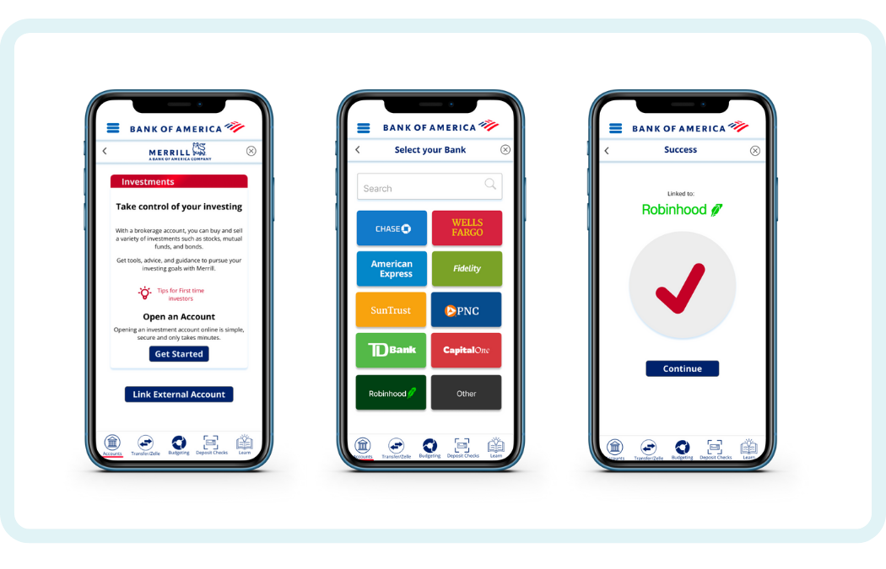
Usability Testing:
We conducted a usability test and at the end of every user test, we sent a satisfaction survey.
In this survey users answered a series of questions to measure their experience with the prototype.
Users rated their experience above the average with a usability score of 91.25.
The Iterations:
We made the fonts and buttons bigger for better readability and usability and added
back arrow to exit hamburger menu.